우선 아래와 같이 입력해 새로운 프로젝트를 생성합니다.
sui move new my_frist_package생성된 폴더인 my_first_package로 가보면 manifest file 인 Move.toml과 소스코드가 있는 sources 디렉토리가 있습니다.
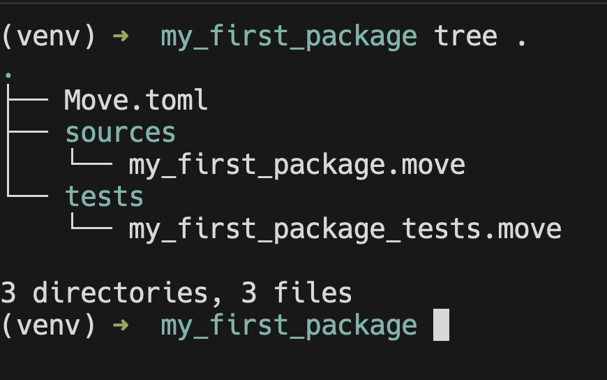
1. Package 정의하기
sources/my_first_package.move 는 사실 아무런 기능을 하지 않습니다.
move로 작성된 소스코드는 module 을 정의해야 합니다.
Docs에서 제공하는 예시 코드를 이미 생성된 sources/my_first_package.move 소스 코드의 바로 밑에 복붙하면 됩니다. 헷갈릴 수 있으므로 전체 코드를 아래에 첨부합니다.
/*
/// Module: my_first_package
module my_first_package::my_first_package;
*/
module my_first_package::example {
// Part 1: These imports are provided by default
// use sui::object::{Self, UID};
// use sui::transfer;
// use sui::tx_context::{Self, TxContext};
// Part 2: struct definitions
public struct Sword has key, store {
id: UID,
magic: u64,
strength: u64,
}
public struct Forge has key {
id: UID,
swords_created: u64,
}
// Part 3: Module initializer to be executed when this module is published
fun init(ctx: &mut TxContext) {
let admin = Forge {
id: object::new(ctx),
swords_created: 0,
};
// Transfer the forge object to the module/package publisher
transfer::transfer(admin, ctx.sender());
}
// Part 4: Accessors required to read the struct fields
public fun magic(self: &Sword): u64 {
self.magic
}
public fun strength(self: &Sword): u64 {
self.strength
}
public fun swords_created(self: &Forge): u64 {
self.swords_created
}
// Part 5: Public/entry functions (introduced later in the tutorial)
// Part 6: Tests
}Rust와 상당히 비슷하기 때문에 익숙하다면 읽기 수월합니다..
위 내용을 기존의 my_first_package.move 에 복붙합니다.
2. Build your package
아래 명령어를 입력해서 build를 진행합니다.
sui move build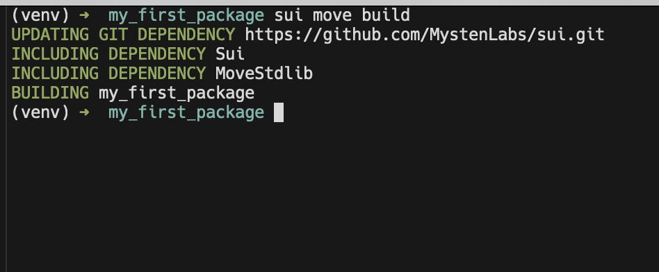
인터넷 문제가 없다면 위 그림과 같이 Build 할 수 있습니다.
build 폴더를 살펴보면 bytecode로 컴파일된 example.mv 파일을 확인할 수 있습니다.
(사진은 xxd로 보기 예쁘게 변환해 둔 결과입니다)
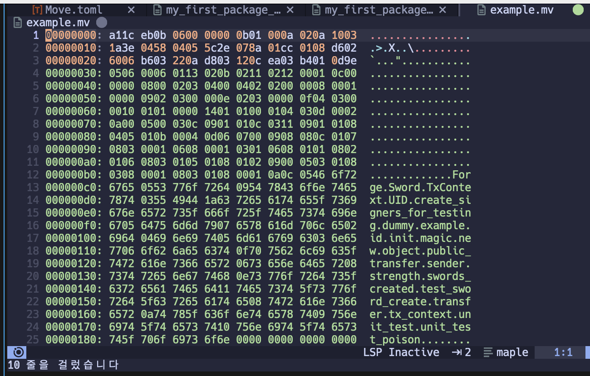
3. Testing
개발에 있어서 testing이 빠질 수 없습니다.
tests/ 폴더는 일단 신경쓰지 말고 위에서 수정한 sources/my_first_package.move 를 계속 수정합니다. 헷갈릴 수 있으므로 전체 코드를 첨부해두겠습니다.
/*
/// Module: my_first_package
module my_first_package::my_first_package;
*/
module my_first_package::example {
// Part 1: These imports are provided by default
// use sui::object::{Self, UID};
// use sui::transfer;
// use sui::tx_context::{Self, TxContext};
// Part 2: struct definitions
public struct Sword has key, store {
id: UID,
magic: u64,
strength: u64,
}
public struct Forge has key {
id: UID,
swords_created: u64,
}
// Part 3: Module initializer to be executed when this module is published
fun init(ctx: &mut TxContext) {
let admin = Forge {
id: object::new(ctx),
swords_created: 0,
};
// Transfer the forge object to the module/package publisher
transfer::transfer(admin, ctx.sender());
}
// Part 4: Accessors required to read the struct fields
public fun magic(self: &Sword): u64 {
self.magic
}
public fun strength(self: &Sword): u64 {
self.strength
}
public fun swords_created(self: &Forge): u64 {
self.swords_created
}
// Part 5: Public/entry functions (introduced later in the tutorial)
// Part 6: Tests
#[test]
fun test_sword_create() {
// Create a dummy TxContext for testing
let mut ctx = tx_context::dummy();
// Create a sword
let sword = Sword {
id: object::new(&mut ctx),
magic: 42,
strength: 7,
};
// Check if accessor functions return correct values
assert!(sword.magic() == 42 && sword.strength() == 7, 1);
let dummy_address = @0xCAFE;
transfer::public_transfer(sword, dummy_address);
}
}그리고 아래 명령어를 입력하면 됩니다.
sui move test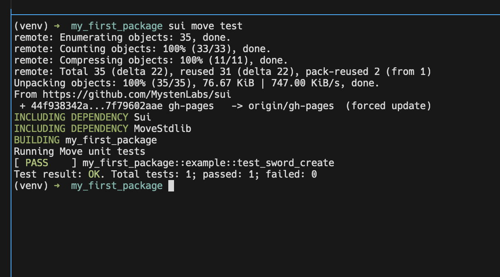
3. Sui-specific testing
Sui 에서 제공하는 test_scenario 모듈을 사용하면 Sui를 사용하는 맥락에서의 testing도 가능합니다.
우선 sword를 생성하는 함수를 하나 추가합니다.
public fun sword_create(magic: u64, strength: u64, ctx: &mut TxContext): Sword {
Sword {
id: object::new(ctx),
magic: magic,
strength: strength,
}
}그리고 아래 test code를 추가합니다.
#[test]
fun test_sword_transactions() {
use sui::test_scenario;
// Create test addresses representing users
let initial_owner = @0xCAFE;
let final_owner = @0xFACE;
// First transaction executed by initial owner to create the sword
let mut scenario = test_scenario::begin(initial_owner);
{
// Create the sword and transfer it to the initial owner
let sword = sword_create(42, 7, scenario.ctx());
transfer::public_transfer(sword, initial_owner);
};
// Second transaction executed by the initial sword owner
scenario.next_tx(initial_owner);
{
// Extract the sword owned by the initial owner
let sword = scenario.take_from_sender<Sword>();
// Transfer the sword to the final owner
transfer::public_transfer(sword, final_owner);
};
// Third transaction executed by the final sword owner
scenario.next_tx(final_owner);
{
// Extract the sword owned by the final owner
let sword = scenario.take_from_sender<Sword>();
// Verify that the sword has expected properties
assert!(sword.magic() == 42 && sword.strength() == 7, 1);
// Return the sword to the object pool (it cannot be simply "dropped")
scenario.return_to_sender(sword)
};
scenario.end();
}주목할 점은 scenario.take_from_sender<Type>(); 메서드 입니다.
이를 이용해 손쉽게 특정 타입(Sword)의 address-owned object 를 transaction에서 다룰 수 있게 됩니다.
마지막 transaction에서 scenario.return_to_sender(sword)를 통해 앞에서의 drop 문제를 조금 더 유연하게 처리하고 있습니다.
이 때, test_utils에서 제공하는 destroy<T>()를 사용할 수도 있습니다.
마지막 코드만 다시 적어보면 아래와 같습니다.
use sui::test_utils;
// ...
// Third transaction executed by the final sword owner
scenario.next_tx(final_owner);
{
// Extract the sword owned by the final owner
let sword = scenario.take_from_sender<Sword>();
// Verify that the sword has expected properties
assert!(sword.magic() == 42 && sword.strength() == 7, 1);
// Return the sword to the object pool (it cannot be simply "dropped")
// scenario.return_to_sender(sword)
test_utils::destroy<Sword>(sword)
};
4. Module Initialize
Smart Contract의 constructor 같은 존재입니다.
init() 함수로 작성되며, 아래와 같이 TxContext 타입을 인자로 받는 형식으로 작성되어야 합니다.
fun init(ctx: &TxContext)fun init(ctx: &mut TxContext)fun init(otw: EXAMPLE, ctx: &TxContext)fun init(otw: EXAMPLE, ctx: &mut TxContext)
또, 아래와 같은 규칙이 있습니다.
- Return value 없음
- Private visibility
- module의 one-time witness value 를 첫 번째 인자로 받을 수 있음
5. Publish a package
Smart contract Deploy에 해당하는 작업입니다.
network는 active-env이고, 계정은 active-address입니다.
아래와 같이 입력해서 배포할 수 있습니다.
sui client publish
물론 배포할 때는 gas 가 필요합니다.. (faucet에서 얻으면 됩니다)
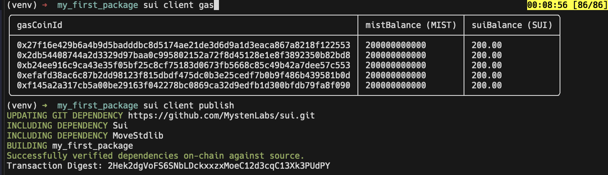
결과는 아래와 같이 아주 예쁜 TUI 로 보여줍니다.
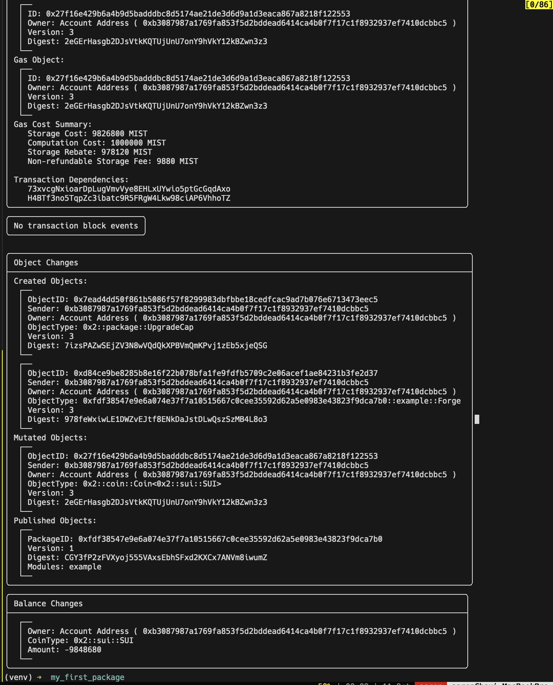
결과를 아래와 같이 나뉘어진 블록으로 설명하고 있습니다.
- Transaction Data
- Transaction Effect
- Transaction Block Event
- Object Changes
- Balance Changes
이 중 active-address가 소유한 object를 아래와 같이 명령어를 입력해 살펴볼 수 있습니다.
sui client objects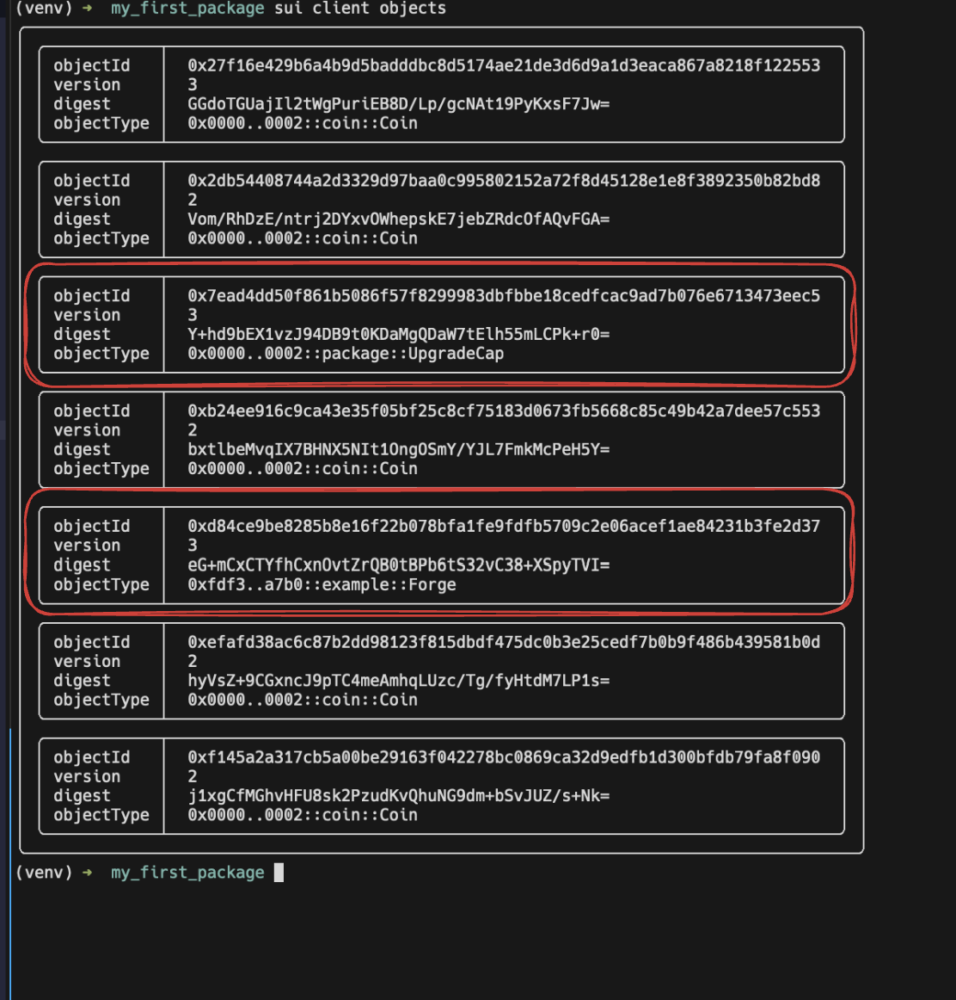
Object 종류에 대해 설명하면 다음과 같습니다.
Coin: faucet에서 받은 토큰입니다.UpgradeCap: publish 한 Package들이 여기에 receipt로 남게 된다고 합니다. 향후 package 를 업그레이드 할 때 사용하거나, burn 해서 업그레이드 할 수 없게 만들 때 이용한다고 합니다.Forge: publish 한 Package의init함수에서Forgeobject를 만들어서 (admin이라는 변수 명 사용) 현재 active-address인ctx.sender()에게transfer()한 결과로 이해할 수 있습니다.
4-1. Interact with Package
Publish 된 Package와 상호작용하는 방법을 살펴봅니다.
가장 간단한 방법은 아래 명령어를 사용하는 것입니다.
sui client call --package <PACKAGE-ID> --module <MODULE> --functio <FUNCTION> --args ...Note
PACKAGE-ID를 까먹었다면 다음과 같은 순서로 구할 수 있습니다.
- 우선
sui client objects를 입력해<PACKAGE-ID>::<MODULE>::Object로 명시된 objectType 을 확인합니다.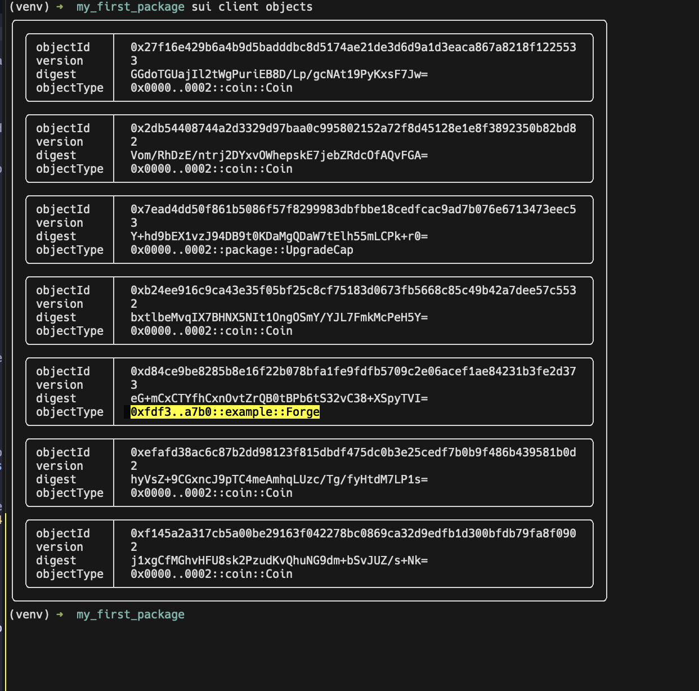
- 중간에 생략된
<PACKAGE-ID>를 확인하기 위해서는sui client object <object-id>를 입력하면 됩니다.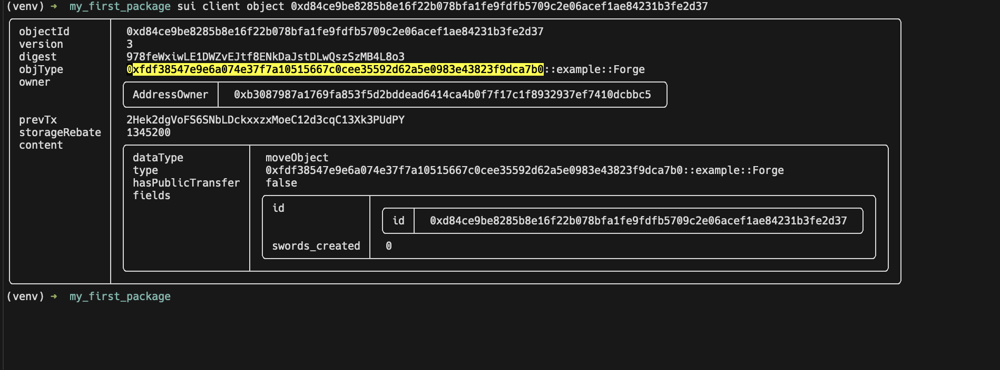
실제로 sui client call 을 해보면 아래와 같습니다.
지금은 Forge object를 알고 있기 때문에 이를 인자로 사용하는 swords_created을 호출해보았습니다.
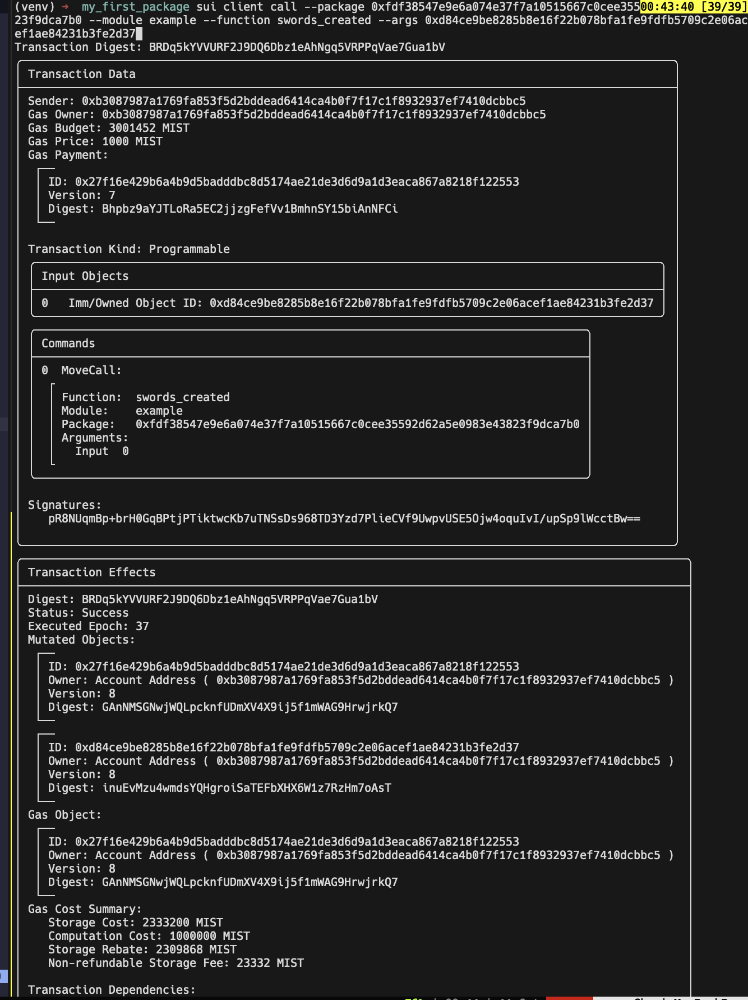
Important
Docs 에서는 이보다 좀 더 유연한 방법인
ptb를 설명하고 있습니다.이는 아래와 같이 명령어를 입력하는 방식입니다.
sui client ptb \ --assign forge @<FORGE-ID> \ --assign to_address @<TO-ADDRESS> \ --move-call <PACKAGE-ID>::example::sword_create 10 20 \ --assign sword \ --transfer-objects "[sword]" to_address \ --gas-budget 20000000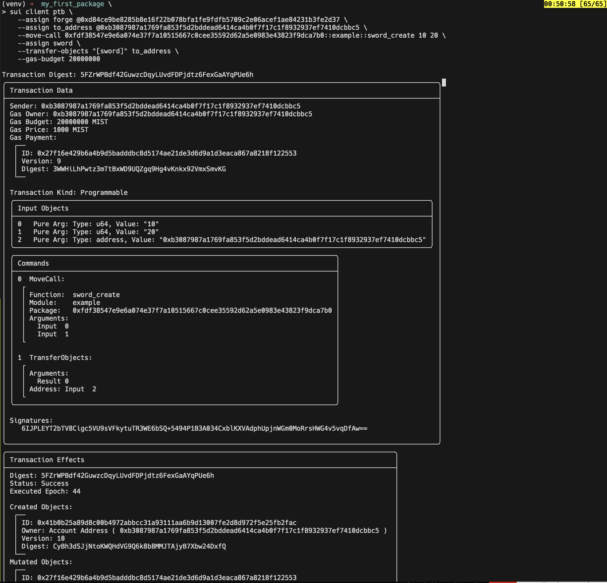
5. Debugging
개발 과정에서 디버깅도 아주 요긴하게 사용됩니다.
use std::debug;
debug::print(&v);
debug::print_stack_trace();위와 같은 방법으로 적재적소에서 값을 찍어보면 됩니다.
6. Client App w/ Sui TS SDK
다음 글에서 이어 정리하겠습니다…